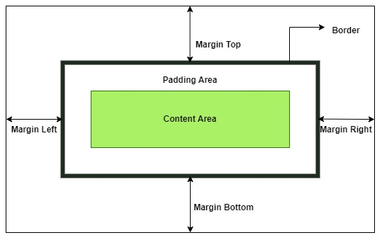

CSS MARGINS
Home
Introduction
Selectors
Colors
Backgrounds
Borders
Margins
Padding
Height/Width
Box Model
Text
Fonts
Display
Position
Float
Flexbox
Grid
Responsive
CSS Margin Properties
Margins create space around elements, outside of any defined borders. They are used to create space between elements.

| Property | Description |
|---|---|
| margin-top | Sets the top margin of an element |
| margin-right | Sets the right margin of an element |
| margin-bottom | Sets the bottom margin of an element |
| margin-left | Sets the left margin of an element |
| margin | Shorthand property for setting all margins in one declaration |
Individual Margins
You can set margins for each side individually:
p {
margin-top: 50px;
margin-right: 30px;
margin-bottom: 50px;
margin-left: 30px;
}
Margin Shorthand
The margin property is a shorthand property for setting all margins at once:
/* When all four margins are the same */
p {
margin: 25px; /* All four margins: 25px */
}
/* When top/bottom and right/left margins differ */
p {
margin: 25px 50px; /* top and bottom 25px, right and left 50px */
}
/* When top, right/left, and bottom margins differ */
p {
margin: 25px 50px 75px; /* top 25px, right and left 50px, bottom 75px */
}
/* When all four margins differ */
p {
margin: 25px 50px 75px 100px; /* top, right, bottom, left (clockwise) */
}
Auto Value
You can use margin: auto to horizontally center an element within its container:
div {
width: 300px;
margin: auto; /* Horizontally center this div */
border: 1px solid red;
}
Margin Collapse
Top and bottom margins of elements sometimes collapse into a single margin. This means that if you have two elements with adjacent margins, the margin between them will be the larger of the two margins, not the sum:
h1 {
margin-bottom: 50px;
}
h2 {
margin-top: 20px; /* This will collapse with h1's margin */
}
/* The resulting margin between h1 and h2 will be 50px, not 70px */
Negative Margins
Margins can also have negative values, which can be used to overlap elements:
div {
margin-top: -20px; /* Pulls the element 20px up */
}